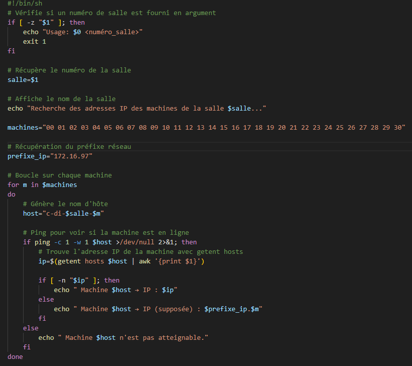
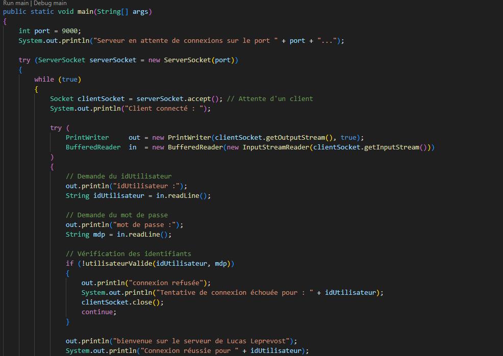

DS Réseau : Scripts shell & Programmation réseau Java
Ce projet porte sur la découverte et la manipulation des réseaux à travers des scripts shell pour l’exploration du réseau local et la programmation de serveurs en Java. Il met en œuvre des outils de diagnostic réseau, la gestion d’adresses IP et la communication client-serveur.
Aspects techniques
Ressources utilisées
Bash / Shell
Java (Sockets, flux)
Commandes réseau (ping, getent, awk)
Fonctionnalités clés
Découverte des machines du réseau par script
Affichage des adresses IP et état des machines
Serveur Java avec authentification et commandes
Client Java pour tester la connexion
Structure du projet
Scripts shell : testSalle.sh, test3salles.sh, test.sh
Serveurs Java : ServeurLorem.java, ServeurBis.java
Fichier de compte-rendu : LEPREVOST_Lucas_R2-05.txt
Captures & Extraits

Exemple de script shell pour scanner une salle

Extrait du serveur Java avec authentification
Résultat d’un scan réseau par script
Objectifs pédagogiques
Automatisation
Écrire des scripts shell pour automatiser la découverte et le diagnostic réseau.
Programmation réseau
Développer des applications client-serveur en Java avec gestion des flux et authentification.
Analyse réseau
Comprendre le fonctionnement des adresses IP, du routage et des outils de diagnostic réseau.